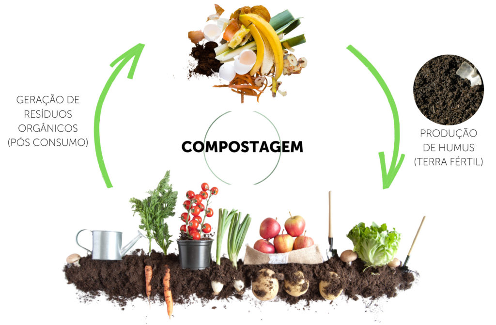

Oque é a Reciclagem dos Resídos Orgânicos
Consiste na reutilização de produtos orgânicos
- O que é reciclagem de resíduos orgânicos?
- Qual sua utilidade?
Trata-se do processo de separação manual ou mecanizada de resíduos potencialmente recicláveis oriundos de uma coleta seletiva, quantitativamente e os resíduos orgânicos antes de serem utilizados no processo de compostagem e vermicompostagem.
O aproveitamento de resíduos é uma estratégia muito utilizada na Fazendinha Agroecológica com o objetivo de elevar a sustatenbilidade do sistema de produção, pois reduz as perdas de nutrientes e diminui a dependência por insumos externos á propriedade